Notes on Inference
% Inference
% Jinghong Chen
% 2021-2
Bayesian Linear Regression
Given data $D={\tilde x_n, y_n}$, we assume a generative linear model $y_n = w^T\tilde x + \epsilon_n$, where $\epsilon_n\sim \mathcal{N}(0, \sigma^2)$ with $w$ beinKg the parameters to infer about.
The posterior distribution for $w$ is given by $p(w|y,\tilde X) = \frac{p(y|\tilde X, w)p(w)}{p(y|\tilde X)}$. The predictive distribution for $y_\star$ given new corresponding $x_\star$ is $p(y_\star|\tilde x_\star, y, \tilde X)=\int p(y_\star|x_\star, w)p(w|y, \tilde X)dw$
Exact inference is possible if the prior and noise distributions are Gaussian. We can use the technique called completing the square
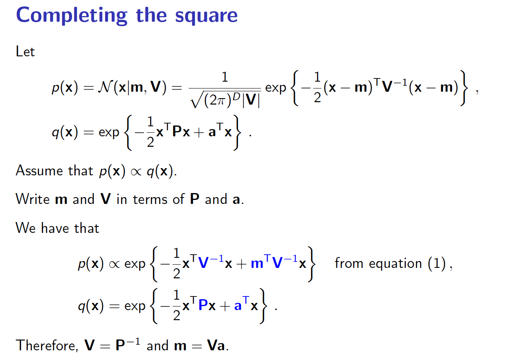
Using this technique, we can write down the probability distribution for the posterior.
Classification
In classification, we aim to 1) partition the input space into $C$ decision regions, one for each class. 2) Each new input is assigned the class of its corresponding decision region and 3) a measurement of confidence (probability) in the decisions.
Probabilistic Linear Classification
In probabilistic linear classification, the class probability is computed as $p(y_n=1|\tilde x, w) = \sigma(w^Tx)$, where $\sigma(\cdot)$ is a monotonically increasing functino which maps $\mathbb{R}$ into $[0,1]$.
Logistic Regression
With $p(C_2|\phi) = 1 - p(C_1|\phi)$. Here $\sigma(x)=1/(1+\exp(-x))$ is the logistic sigmoid function. This is called logistic regression in statistics.
For an $M$-dimensional feature space $\phi$, this model has $M$ adjustable parameters. By constrast, the Gaussian class conditional will have $O(M^2)$ parameters expanding quadratically.
We now use the maximum likelihood to determine the parameters of the logistic regression model. We use the derivative of the logistic sigmoid function given below: $$ \frac{d\sigma}{da} = \sigma(1-\sigma) $$
Note that $1-\sigma(a) = \sigma(-a)$, so we arrive at a convenient relation $\frac{d \ln\sigma(a)}{da} = \sigma(-a)$
For a data set ${\phi_n, t_n}$, where $t_n \in {0, 1}$ and $\phi_n = \phi( \mathbf{x_n})$ (the features), with $n = 1,…,N$, the likelihood function can be written as:
$$ p( \mathbf{t}| \mathbf{w}) = \prod_{n=1}^N y_n^{t_n} {(1-y_n)}^{1-t_n} $$
where $ \mathbf{t} = (t_1, … ,t_N)^T$ and $y_n = p(C_1|\phi_n)$. We can define an error function by taking the negative logarithm of the likelihood, which gives the cross entropy error function in the form
$$ E( \mathbf{w}) = -\ln p ( \mathbf{t}| \mathbf{w}) = - \sum_{n=1}^N{t_n \ln y_n + (1-t_n)\ln (1-y_n)} $$
where $y_n = \sigma(a_n)$ and $a_n = \mathbf{w}^T \mathbf{\phi}n$. Taking the gradient of the error function with respect to $ \mathbf{w}$, we obtain
$$ \nabla E( \mathbf{w}) = \sum{n=1}^N (y_n-t_n)\phi_n $$.
The gradients are in the directions of the feature data points. In two-class classification, the parameters $w$ which defines the decision boundary can be seen as being pulled and repelled by data points depending on their class label in the gradient ascent algorithm.
We can then use Gradient ascend to maximize the log-likelihood given by $w^{new} = w^{old}+\alpha\frac{d\mathcal{L(w)}}{dw}$, where $\alpha$ is the learning rate.
We should note that when the data is linearly separable the ML estimator of the parameters can go to infinity, which is essentially overfitting. To counter that, we need to introduce prior on our parameters and use the Bayesian approach.
Dimensionality Reduction
In dimensionality reduction we aim to find a low dimensional representation of data. This often results in a mapping from data to a manifold coordinates and back.
In mathematics, a manifold is a topological space that locally resembles Euclidean space near each point. More precisely, an n-dimensional manifold, or *n\-manifold* for short, is a topological space with the property that each point has a neighborhood that is homeomorphic to the Euclidean space of dimension n.
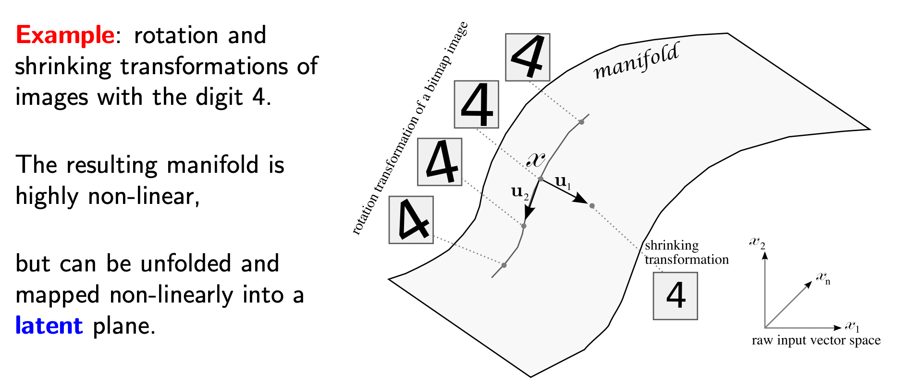
Principal Component Analysis (PCA)
Linear dimensionality reduction method: data manifold assumed to be linear. We try to find the projection that minimises the square reconstruction error. The data is then represented by the projection coefficients on the principal directions.
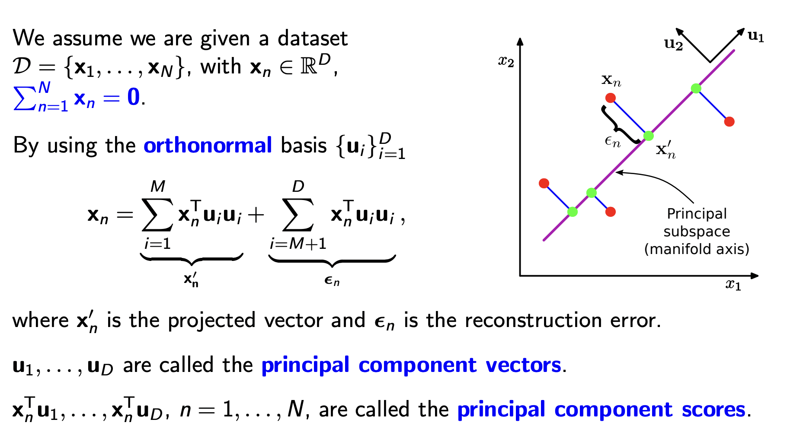
We can show that the objective is identical to maximising the variance of projected data
The principal component vectors are the eigenvectors of the empirical covariance matrix of the data $\hat S = \frac{1}{N}\sum_n x_nx_n^T$, sorted by the magnitude of eigenvalues. So that the residual lies in the space spanned by the eigenvectors with the smallest eigenvalues. The derivation is as follows:
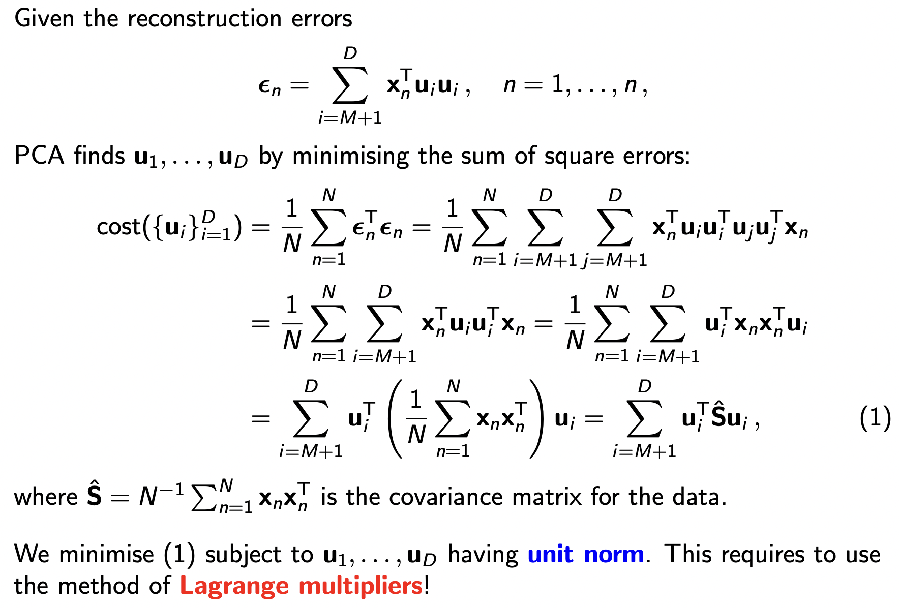
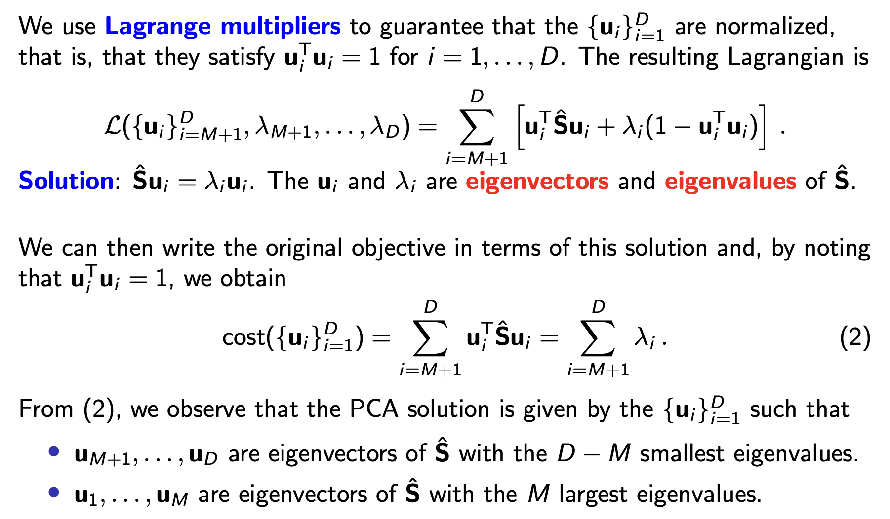
Clustering
K-means Clustering
input: $\mathcal{D}={x_1, x_2,…,x_N}, x_n \in \mathbb{R}^D$
Initialise: $m_k\in\mathbb{R}^D$ for $k=1,..,K$
repeat
for $n = 1,…,N$
$s_n = \arg\min_k ||x_n - m_k|| $
for $k = 1,…,K$
$m_k = mean(x_n | s_n = k)$
until convergence ($s_n$ fixed)
Theorizing K-means: Optimizing Cost Function / Minimising Energy

Mixture of Gaussian (MoG) Model
The mixture of Gaussian model is a generative model for clustered data. It assumes that the data are generated by sampling from a set of normal distribution with certain class probability (hence the name ‘mixture Gaussian’), as shown below:
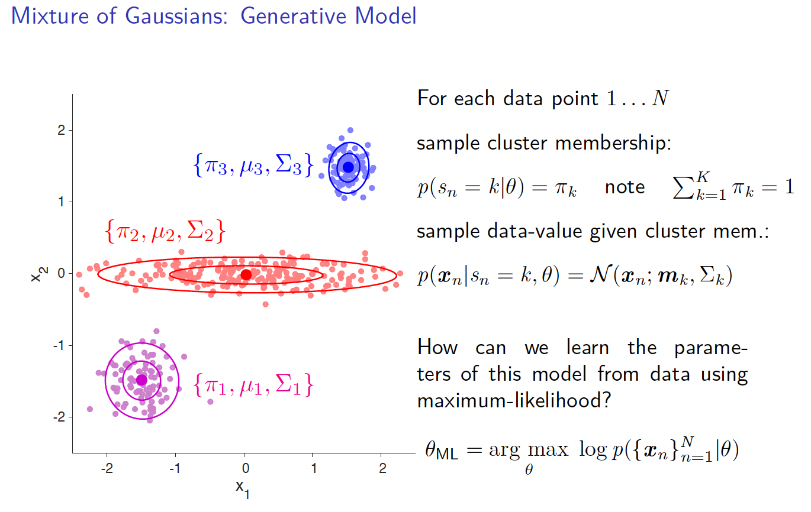
Expectation Maximization Algorithm (EM)
Instead of doing gradient ascent directly on the log-likelihood, we optimise the free energy defined as the difference between log-likelihood and a KL divergence between an arbitrary distribution and the class distribution.
The free energy is defined as
$$\mathcal{F}(q(s), \theta)=\log p(x|\theta) - \sum_s q(s)\log\frac{q(s)}{p(s|x,\theta)}$$
We note that:
- The KL divergence is non-negative and equal zero if and only if $q(s)=p(s|x,\theta)$
- When KL divergence equals zero, the free energy IS the log-likelihood
- $q(s)$ can be an arbitrarily chosen to describe the class distribution
- The free energy can be computed using the alternative formular $\mathcal{F}(q, \theta) = \sum_sq(s)\log(p(x|s,\theta)p(s|\theta))- \sum_s q(s)log(q(s))$ to avoid computing the log-likelihood
The optimisation can then be divided into two steps (much like that in K-means):
- Expectation (E): fixing $\theta$, maximise $\mathcal{F}$ with respect to $q(s)$ (soft assignment)
- Maximisation (M): fixing $q$, maximise $\mathcal{F}$ with respect to $\theta$ (model fitting)

Note that the free energy can be written as the expectation of $p(x,s|\theta)$ taken w.r.t $q(s)$, plus the entropy of $q(s)$. It is sometimes useful to note that $\frac{d}{dp}H_2(p) = -logit(p) = -\log\frac{p}{1-p}$. The nice property about logit function is that it is the inverse of the sigmoid function $\sigma(x)=\frac{1}{1+\exp(-x)}$. In other words, if $logit(p)=A$, then $p = \sigma(A)$
EM Algorithm Applied to Mixture of Gaussian (MoG)
In summary, the E-step is about making soft assignment to the data points and the M-step is about optimising model parameters with the soft assignments fixed.

Understanding EM
From a high level, we can view EM as a way to do maximum likelihood method over models with latent variables.
To motivate EM, we note that oftentime $\log p(y)$ is an intractable distribution to maximize (e.g., Mixture of Gaussian), but the joint distribution $\log p(y,z)$ is nicer (e.g., z being the class label). We wish to obtain the maximum likelihood of $\log p(y)$, and we approximate it with $E_{q(z)}[\log p(y,z)]$
But $z$ is unknown, so we first estimate the latent variable using Bayes’ Rule. This is the expectation step.
After estimating the $z$ (i.e., having got the posterior $q(z|y,\theta)$ for $z$), we take the expectation of $\log p(y,z)$ over $q(z)$ and optimize with respect to the model parameters $\theta$. So our update rule in the maximization step is $\theta = \arg\max_{\theta}\mathbb{E}{q(z)}[\log p(y,z)] = \arg\max{\theta}\mathbb{E}_{q(z)}[\log p(y|z)p(z)] $
The free energy gives us a compact mathematical object to perform the steps above.
Wessel has a very good explanation of the ideas above, checkout [his notes](Wessel Expectation Maximisation.pdf)
Sequence Modelling
Markov Model
Gaussian AR Models
We can model continuous state with Gaussian Auto Regressive model. The states $y\in\mathbb{R}$ follows the transition $y_{t+1} = \lambda y_t + \sigma \epsilon$, where $\epsilon \sim \mathcal{N(0,1)}$ is standard Gaussian.
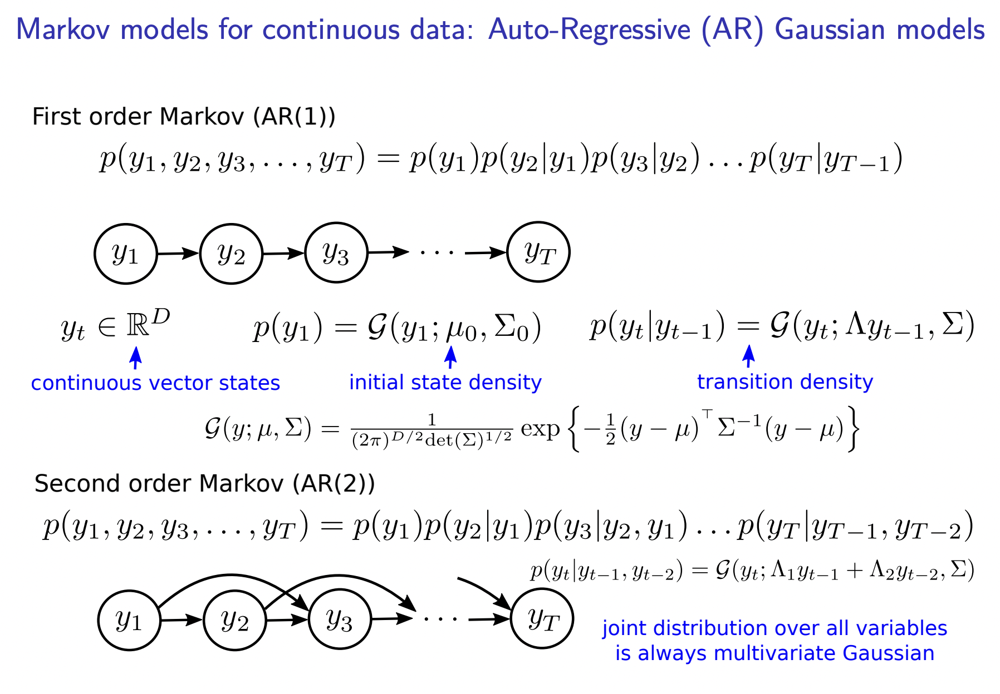
Hidden Markov Models (HMM)
In HMM, the output of the Markov chain depends on the hidden states. This is illustrated below:
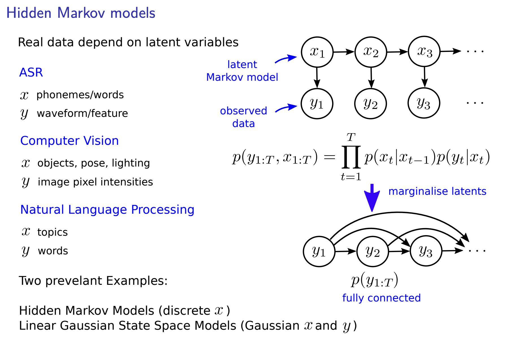
Note that HMM is fundamentally different from Markov model without latent states. After expansion, a HMM is equivalent to a fully connected chain (which defeats the concept of Markov chain)
Discrete State HMM
Below is an example of a HMM with discrete hidden state and Gaussian emission. The stationary distribution resembles a mixture of Gaussian model, with mixing proportion being the stationary distribution of the hidden chain.
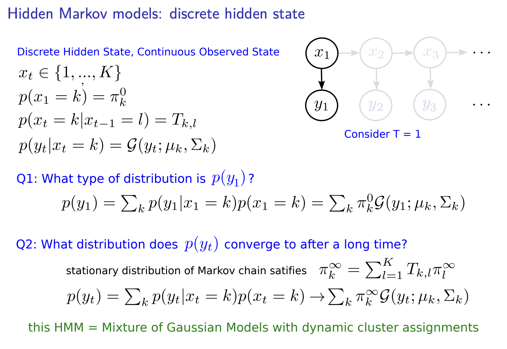
Linear Gaussian State Space Model (LGSSM)
LGSSMs refer to models with continuous hidden state and the hidden state transition follows a Gaussian AR model, as shown below:
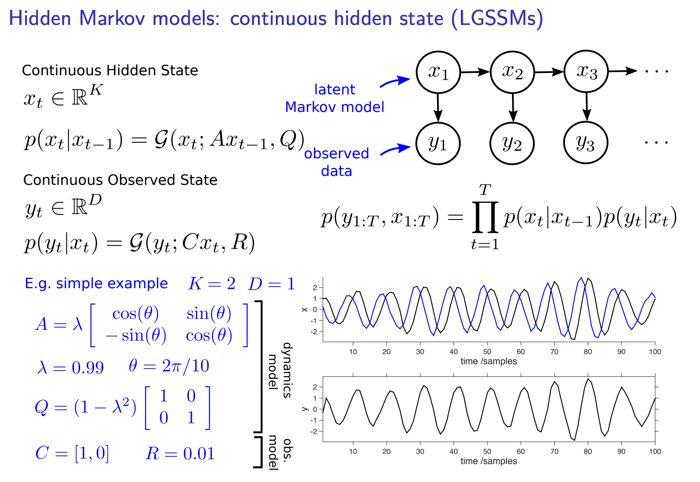
Types of Inference
Depending on which probability we are after, inference problem with HMM can be divided into four categories with two sets of criterion: online or offline, marginal or joint
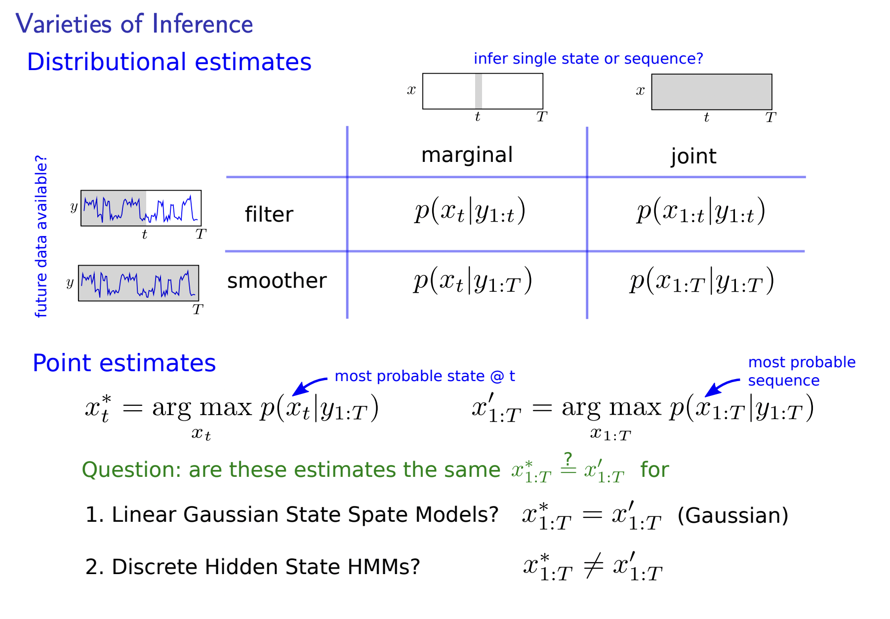
Terminology of Distributions
In HMM questions, there are a lot of distributions defined and they can be confusing. Below is the terminology for these distributions:
- Transition Probability $p(x_t|x_{t-1})$
- Emitting Probability $p(y_t|x_t)$
- Filtering Distribution $p(x_t|y_{1:t})$ (often also called posterior)
- Predicative Distribution $p(x_{t+1}|y_{1:t})$
- Likelihood $p(y_{1:T})$
- Forcast Distribution $p(y_{t+1}|y_{1:t})$
Kalman Filter
The Kalman filter is an algorithm for filtering. That is, we want to compute $p(x_T|y_{1:T})$, predicting the hidden state with observed data.
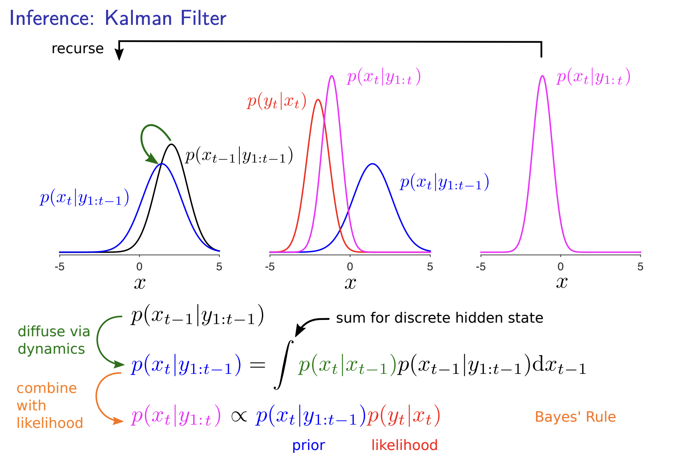
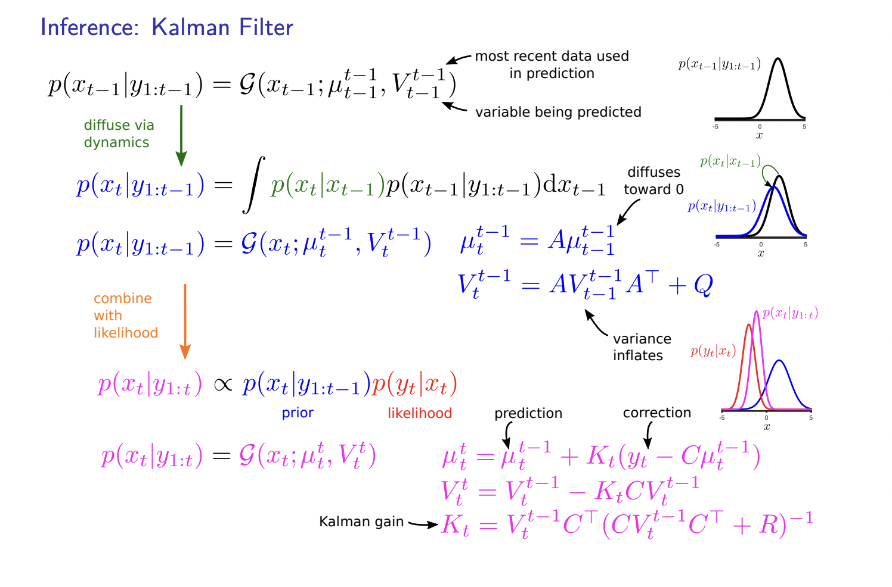
Forward Algorithm
The forward algorithm, in the context of a hidden Markov model (HMM), is used to calculate a ‘belief state’: the probability of a state at a certain time, given the history of evidence. The process is also known as filtering. The forward algorithm is closely related to, but distinct from, the Viterbi algorithm. See more on wiki.
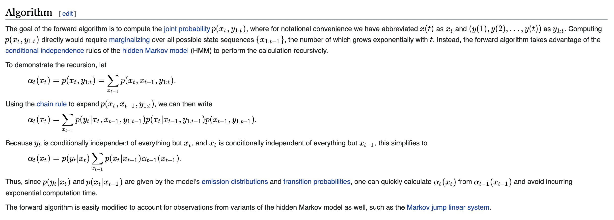
Note that in the forward algorithm we are interested in the joint probability $p(x_t, y_{1:t})$, this makes for a nice recursive relationship. The forward algorithm can also yield the filtering distribution $p(x_t|y_{1:t})$ and the likelihood of the data $p(y_{1:t})$ as byproducts. This is done by noting that $p(y_{1:t}) = \sum_{x_t}p(x_t, y_{1:t})$ and $p(x_t, y_{1:t})=p(x_t|y_{1:t})p(y_{1:t})$
Learning Parameters of HMM
EM algorithm or direct optimisation
Extensions
Hidden Markov Models for unsupervised high dimensional video understanding. This can be useful for migration to NLP tasks!e
Jinghong Chen @2021-2022